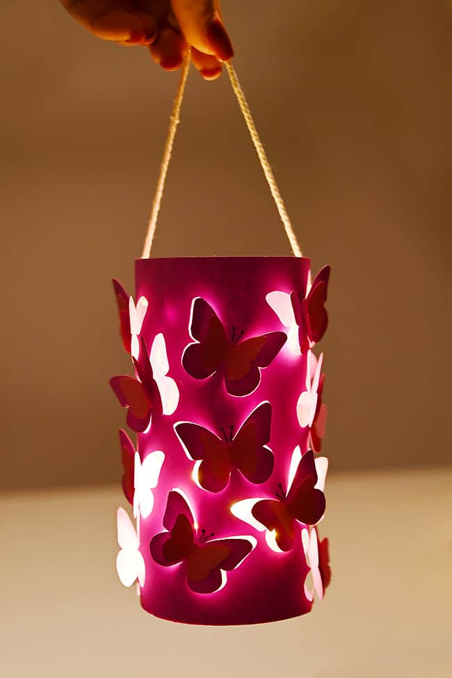

My Favourite Things
I love to attend piano concerts or classical music kacheris.
Personally , I enjoy singing movie OSTs.
I love to engagae in art and craft.
I take special delight in making paper lanterns.
My top five favourite food
- steamed momos
- kerala veg meals
- Cheenai appalam
- idlis
- dosas
My top 3 favourite books
- Offering Salted Fish to Master
- Eclipse
- Time Management strategies
My Hobbies
Butterfly Lanterns
I like making them because
these can be easily made from
leftover origami papers
Digital Art
I like it because this medium is versatile. There
is room to experiment.
Singing
I love this sctivity
because it makes me stress-free!
Image depictiong one of my interests
